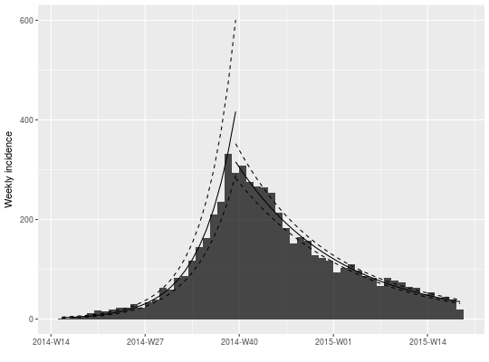
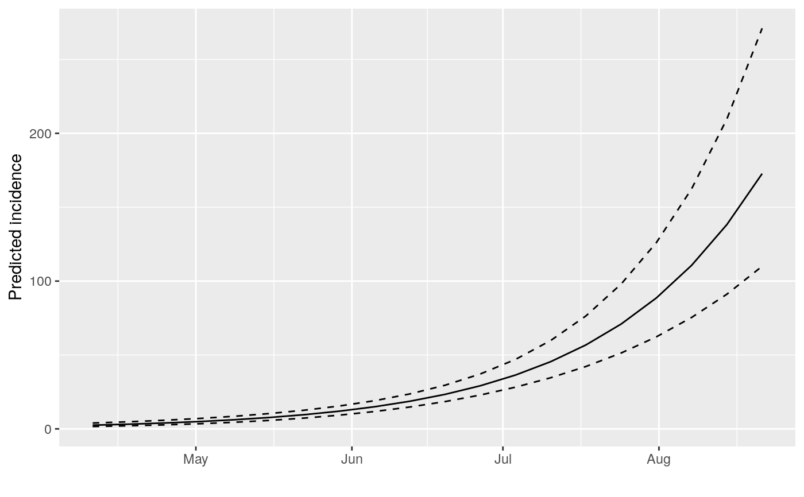
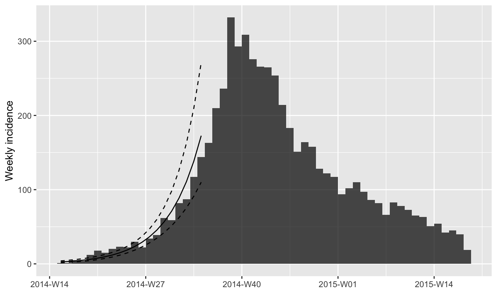
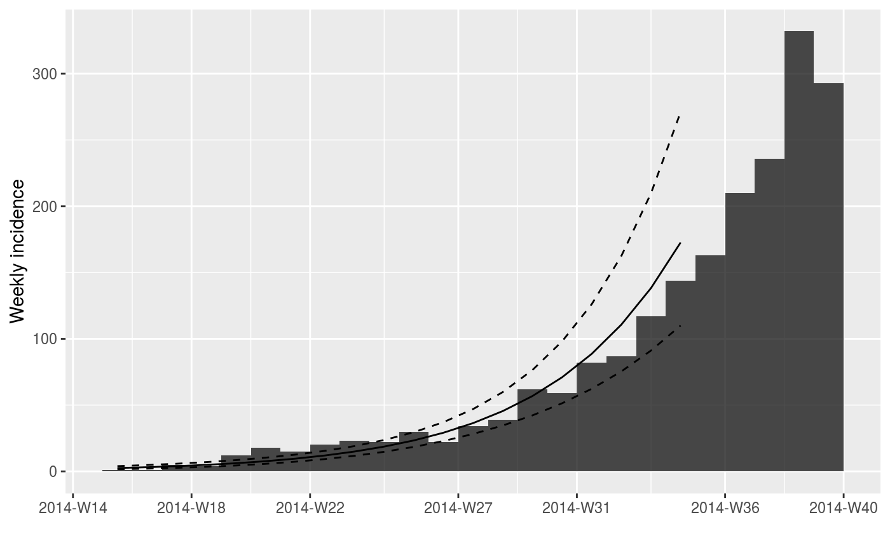
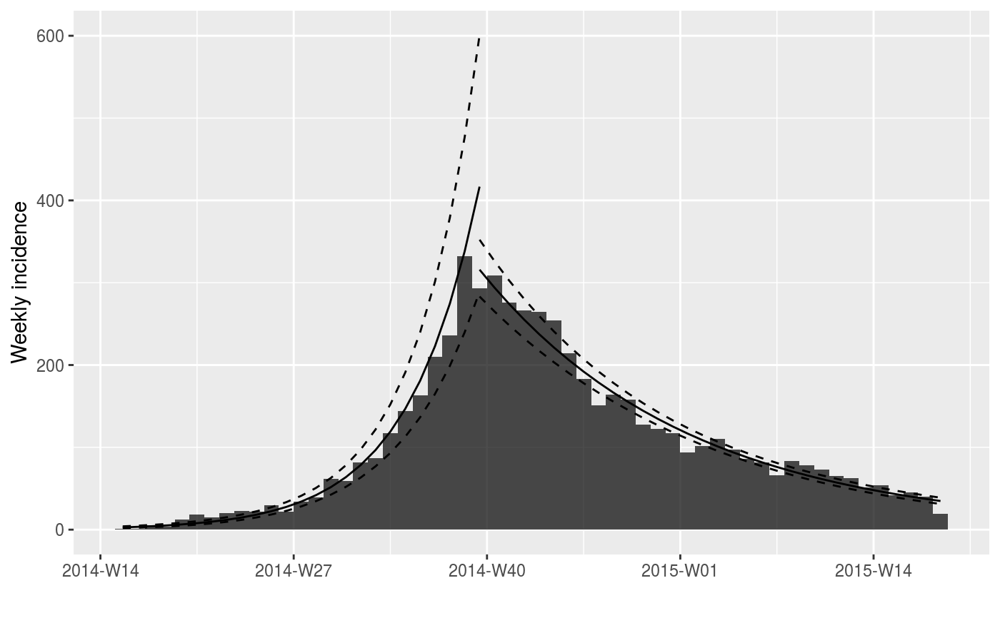

Fit exponential models to incidence data
fit.RdThe function fit fits two exponential models to incidence data, of the
form: \(log(y) = r * t + b\)
where 'y' is the incidence, 't' is time
(in days), 'r' is the growth rate, and 'b' is the origin. The function fit
will fit one model by default, but will fit two models on either side of a
splitting date (typically the peak of the epidemic) if the argument split
is provided. When groups are present, these are included in the model as main
effects and interactions with dates. The function fit_optim_split() can be
used to find the optimal 'splitting' date, defined as the one for which the
best average R2 of the two models is obtained. Plotting can be done using
plot, or added to an existing incidence plot by the piping-friendly
function add_incidence_fit().
fit(x, split = NULL, level = 0.95, quiet = FALSE) fit_optim_split(x, window = x$timespan/4, plot = TRUE, quiet = TRUE, separate_split = TRUE) # S3 method for incidence_fit print(x, ...) # S3 method for incidence_fit_list print(x, ...)
Arguments
| x | An incidence object, generated by the function
|
|---|---|
| split | An optional time point identifying the separation between the two models. If NULL, a single model is fitted. If provided, two models would be fitted on the time periods on either side of the split. |
| level | The confidence interval to be used for predictions; defaults to 95%. |
| quiet | A logical indicating if warnings from |
| window | The size, in days, of the time window either side of the split. |
| plot | A logical indicating whether a plot should be added to the
output ( |
| separate_split | If groups are present, should separate split dates be
determined for each group? Defaults to |
| ... | currently unused. |
Value
For fit(), a list with the class incidence_fit (for a
single model), or a list containing two incidence_fit objects (when
fitting two models). incidence_fit objects contain:
$lm: the fitted linear model$info: a list containing various information extracted from the model (detailed further)$origin: the date corresponding to day '0'
The $info item is a list containing:
r: the growth rater.conf: the confidence interval of 'r'pred: adata.framecontaining predictions of the model, including the true dates (dates), their numeric version used in the model (dates.x), the predicted value (fit), and the lower (lwr) and upper (upr) bounds of the associated confidence interval.doubling: the predicted doubling time in days; exists only if 'r' is positivedoubling.conf: the confidence interval of the doubling timehalving: the predicted halving time in days; exists only if 'r' is negativehalving.conf: the confidence interval of the halving time
For fit_optim_split, a list containing:
df: adata.frameof dates that were used in the optimization procedure, and the corresponding average R2 of the resulting models.split: the optimal splitting datefit: anincidence_fit_listobject containing the fit for each split. If theseparate_split = TRUE, then theincidence_fit_listobject will contain these splits nested within each group. All of theincidence_fitobjects can be retrieved withget_fit().plot: a plot showing the content ofdf(ggplot2 object)
See also
the incidence() function to generate the 'incidence'
objects. The get_fit() function to flatten incidence_fit_list objects to
a list of incidence_fit objects.
Examples
if (require(outbreaks)) { withAutoprint({ dat <- ebola_sim$linelist$date_of_onset ## EXAMPLE WITH A SINGLE MODEL ## compute weekly incidence i.7 <- incidence(dat, interval=7) plot(i.7) plot(i.7[1:20]) ## fit a model on the first 20 weeks f <- fit(i.7[1:20]) f names(f) head(get_info(f, "pred")) ## plot model alone (not recommended) plot(f) ## plot data and model (recommended) plot(i.7, fit = f) plot(i.7[1:25], fit = f) ## piping versions if (require(magrittr)) { plot(i.7) %>% add_incidence_fit(f) ## EXAMPLE WITH 2 PHASES ## specifying the peak manually f2 <- fit(i.7, split = as.Date("2014-10-15")) f2 plot(i.7) %>% add_incidence_fit(f2) ## finding the best 'peak' date f3 <- fit_optim_split(i.7) f3 plot(i.7) %>% add_incidence_fit(f3$fit) } })}#> > dat <- ebola_sim$linelist$date_of_onset #> > i.7 <- incidence(dat, interval = 7) #> > plot(i.7)#> > plot(i.7[1:20])#> > f <- fit(i.7[1:20]) #> > f #> <incidence_fit object> #> #> $lm: regression of log-incidence over time #> #> $info: list containing the following items: #> $r (daily growth rate): #> [1] 0.03175771 #> #> $r.conf (confidence interval): #> 2.5 % 97.5 % #> [1,] 0.02596229 0.03755314 #> #> $doubling (doubling time in days): #> [1] 21.8261 #> #> $doubling.conf (confidence interval): #> 2.5 % 97.5 % #> [1,] 18.45777 26.69823 #> #> $pred: data.frame of incidence predictions (20 rows, 5 columns) #> > names(f) #> [1] "lm" "info" "origin" #> > head(get_info(f, "pred")) #> dates dates.x fit lwr upr #> 1 2014-04-10 3.5 2.528815 1.611099 3.969283 #> 2 2014-04-17 10.5 3.158367 2.082082 4.791013 #> 3 2014-04-24 17.5 3.944645 2.687383 5.790104 #> 4 2014-05-01 24.5 4.926668 3.463102 7.008763 #> 5 2014-05-08 31.5 6.153167 4.453513 8.501484 #> 6 2014-05-15 38.5 7.685004 5.711842 10.339797 #> > plot(f)#> > plot(i.7, fit = f)#> > plot(i.7[1:25], fit = f)#> > if (require(magrittr)) { #> + plot(i.7) %>% add_incidence_fit(f) #> + f2 <- fit(i.7, split = as.Date("2014-10-15")) #> + f2 #> + plot(i.7) %>% add_incidence_fit(f2) #> + f3 <- fit_optim_split(i.7) #> + f3 #> + plot(i.7) %>% add_incidence_fit(f3$fit) #> + }#>